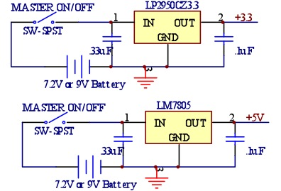

Circuits for TOWRP
Motor and Driver
The boat uses a Traxxas Titan 550 fan-cooled brushed 0.8 Ohm motor that can run up to 14 volts and 20+ Amps. The motor is joined to the propeller via a motor shaft and spyder coupler. The propeller is 10x8, which means it is 10" diameter and in one revolution move 8" through the air. The motor is driven off of a high power H-bridge from Pololu electronics which is capable of running up to 21 Amps at 30 Volts with proper cooling.Motor/Driver Calculation
The motor resistance is 0.8 Ohms. Powered by one fully charged 7.2V battery, it could see a max of 9V. The max current our driver board needs to be capable of handling is 9V/0.8Ohms = 11.25A.Battery is 1500 mAhours, at 7.2V. Total of 1500mAhours * 7.2V = 10800 mWhours.
At full throttle, P = 7.2V * 11.25A = 81W = 81,000 mW
Battery will run down in 10800 mWhours / 81,000mW = 8 minutes of full throttle.
Two batteries in parallel will extend run time to an acceptable 16 minutes of full throttle.
XBee
The master PIC is dedicated to asynchronous communication with the XBee.inter-PIC comm.
The TOWRP uses SSP to communicate between the master PIC and it's two slaves.As such, there are only two communication lines, SCK and SDO (for master) or SCK and SDI (for slaves).
The SSP runs at 625kHz.
The Master PIC runs at 3.3V, but the slaves PICs run at 5V. However, no shift register is needed on the SSP lines because a 3.3V high signal is above the minimum digital high when the PIC is operated at 5V.